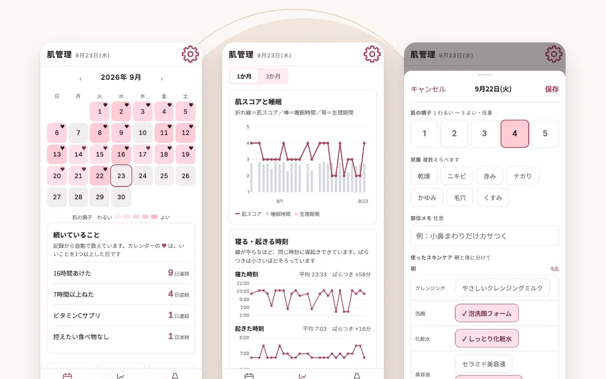
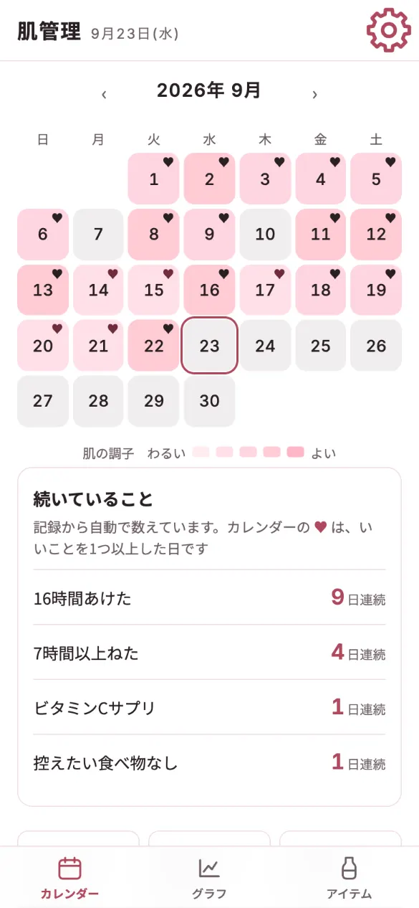
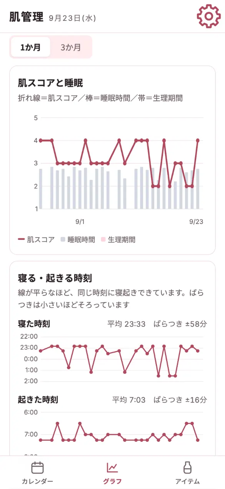
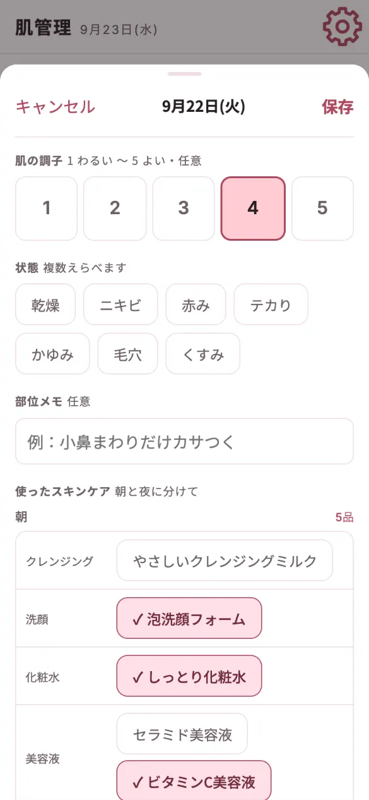

Case
肌の記録と振り返りアプリ
肌の調子・スキンケア・睡眠・食事を毎日記録し、どんな日に肌の調子がよかったかをグラフで振り返れるWebアプリです。自分用に企画から開発まで行いました。

01Problem
困りごと
「スキンケアを色々と試しても、どれが肌に合っているのか違いがわからない。睡眠や食事など、肌によいことも続けたいのに、つい途切れてしまう。」
そこで、「なんとなく」のお手入れを、記録と振り返りで「根拠のあるお手入れ」に変えることを目指しました。
02Features
作ったもの

カレンダーで調子をひと目で
日ごとの肌の調子を色の濃さで表示します。睡眠や食事など、続いているよい習慣の日数も自動で数えます。

グラフで原因を振り返る
肌のスコアと睡眠時間などを重ねて表示し、調子のよい日に何をしていたかを見比べられます。

タップだけで毎日の記録
肌の調子、朝と夜に使ったスキンケア、睡眠・食事をタップ中心で記録できます。前回と同じ内容もすぐ入れられます。
画面は、架空のデータを入れて撮影しています。
03Ideas
工夫したこと
- 続けられるように、入力を増やさない
- 睡眠時間と食べていない時間は、時刻から自動で計算します。「前回と同じにする」ボタンもあり、スキンケア用品は名前から種類を自動で選びます。
- よい習慣が続いていることが見える
- よいことをした日にはカレンダーに ♥ がつき、続いた日数を自動で数えます。
- 記録を失わない
- 記録は本人の Google Drive に自動で引き継ぎます。しばらく控えを取っていないとお知らせが出て、読めないデータも上書きせずに残します。
04Process
進め方
どのアプリも、次の5つの観点で整理して作っています。
目的から決める
だれが・いつ・何のために使うかを先に決め、「どうなれば完成か」を1つずつ言葉にする
「何をしたとき肌がよかったかを見返せる」を目的に、記録する項目ごとに「どうなれば完成か」を決めました（例: 寝た時刻と起きた時刻を入れると、日をまたいでも睡眠時間が正しく出る）。
続けられる使いやすさ
文字の大きさ・色の濃さ・押しやすさを、決めた基準で確かめる
タップ中心で、入力の手間を減らしました。
データの安全
どのデータをどこへ送ってよいかを先に表で決め、公的なガイドラインをもとに確かめる
記録は端末と本人の Google Drive だけに置きます。
壊さない・失わない
直すたびに、実際に動かして確かめる
画面をまたぐ流れまで確かめ、控えの取り方と戻し方も用意しました。
使いながら育てる
実際に使い、気づいた所を直す
毎日の記録で使いながら、項目を見直しています。
使いやすさとデータの安全は、それぞれ独自にまとめたルール（デザインは文字の大きさ・色の濃さ・押しやすさなど。セキュリティは IPA「安全なウェブサイトの作り方」と、OWASP Top 10（Webでよく狙われる弱点の一覧）がもと）の項目ごとに確かめています。
05Security & Data
安全とデータの扱い
- サーバーを持たず、記録はスマホのブラウザの中と、本人の Google Drive のアプリ専用フォルダにだけ保存します。
- Google に渡す権限は、アプリ専用フォルダの読み書きだけに絞っています。
- データを送ってよい先を表で決め、それ以外には送らない作りにしています。
06Deliverables
納品物のイメージ
- Webアプリ一式
- 画面・動き・保存の仕組みをまとめたファイル。GitHub Pages（無料でWebページを公開できるサービス）などに置くだけで動きます
- 使い方・公開の手順書
- 初めての方でも、手順どおりに進めれば使い始められる資料です
あわせて、次の資料もお付けします。
- 設計書
- 画面の流れ、保存するデータの形、外とのつながりをまとめた資料です
- 動作確認の記録
- 何を確かめて、どうだったかの一覧です
見本のアプリは自分用のため、一部そろっていない資料もあります。